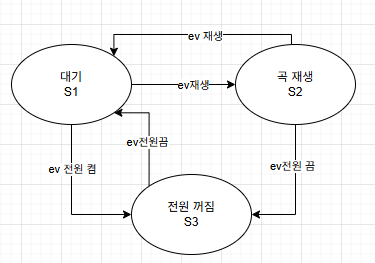
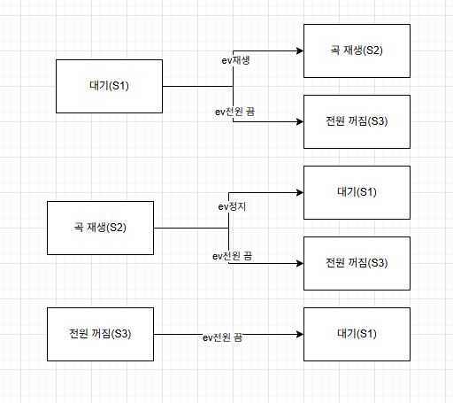
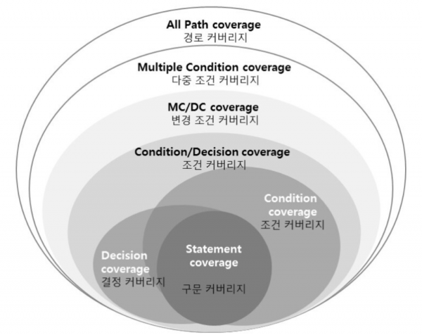

CSTS
소프트웨어 테스트
요구사항, 테스트 원칙, 테스트 설계 기법, 예제, 테스트 프로세스까지
이번 자료의 흐름
- 테스트의 기본 개념을 구조적으로 정리
- 명세 기반, 상태 전이, 구조 기반 테스트
- ISO/IEC/IEEE 29119 기반 테스트 프로세스까지
요구사항, 테스트 원칙, 테스트 설계 기법, 예제, 테스트 프로세스까지
| 테스트 기법 | 설명 |
|---|---|
| 컴포넌트(Component)/단위(Unit) 테스트 |
• 테스트가 가능한 단위로 나누어진 소프트웨어 내에서 결함을 찾고 그 기능을 검증 • 주로 구조 기반 테스트 • 시스템의 다른 부분에서 격리해 독립적으로 수행 • 소스 코드를 활용하여 테스트를 설계, 기능적 테스트 수행 |
| 통합(Intergration) 테스트 |
• 시스템을 구성하는 단위 모듈들이 정확하게 통합되었는지 초점을 둠 • 시나리오 기반의 테스트 수행 • 모듈 간 통합에 주목하여, 코드가 외부 종속성과 올바르게 작동하는지 확인 |
| 시스템(System) 테스트 |
• 발견할 수 있는 환경특성 장애 리스크를 최소화하기 위해 실제 최종사용환경 또는 유사한 환경에서 수행 • 기능적 요구사항은 명세기반(Black-box) 기법 수행 • 비기능적 요구사항은 신뢰성, 사용성, 효율성, 유지보수성, 이식성, 보안성, 호환성 등 품질 속성을 포함 • End to End 테스트를 함(종단간 테스트) |
| 인수(Acceptance) 테스트 | • 고객/사용자 관점에서 고객이 기대하는 방식으로 소프트웨어가 동작하는 지 확인 |
| 테스트 유형 | 설명 |
|---|---|
| 기능 테스트 | • 기능 요구 사항 측면의 결함 검출 및 충족 여부 확인을 목적으로 함 • 모든 테스트 레벨에서 진행됨 |
| 비기능 테스트 | • 성능, 보안성, 신뢰성 등 품질 요구 사항 측면의 결함 검출 및 충족 여부 확인을 목적으로 함 • 일반적으로 시스템 테스트와 인수 테스트 수준에서 진행됨 |
| 테스트 설계기법 | 설명 |
|---|---|
| 정적 테스트 | • 테스트 대상을 실행하지 않는 방식으로 테스트 |
| 동적 테스트 | • 테스트 대상을 실행하여 결함을 검출하는 방식으로, 적절한 입력값 즉 테스트 케이스를 결정해야 함 |
즉, 실행 결과보다 코드와 산출물 자체를 보고 이상을 찾는 접근이에요.
MISRA-C 등의 표준 코딩에 대한 준수 여부 검사
사이클로매틱 복잡도 등, 프로그램의 복잡도 측정
프로그램 자료 흐름에 이상 존재 여부 분석
| 리뷰 유형 | 설명 |
|---|---|
| 관리 리뷰 | • 프로젝트 진행 상황에 대한 검토를 바탕으로 일정, 인력, 범위 등에 대한 통제 및 의사결정 지원 |
| 기술 리뷰 | • 정의된 계획 및 명세를 준수하고 있는지에 대한 검토 수행 |
| 인스펙션 | • 문제(Anomaly)를 식별하고 문제에 대한 올바른 해결(Resolution)을 검증 |
| 워크쓰루 | • 문제를 식별하고 더 나아가서 대안조사, 개선활동, 학습 기회 제공을 수행 |
| 감사 | • 객관적인 표준과 규제에 대한 준수를 독립적으로 평가 |
| 속성 | 1 | 2 | 3 | 4 | 5 | 6 | 7 | 8 |
|---|---|---|---|---|---|---|---|---|
| 나이 16~65 | 1 | 1 | 1 | 1 | 0 | 0 | 0 | 0 |
| 소득 < 20,000 | 1 | 1 | 0 | 0 | 1 | 1 | 0 | 0 |
| 자녀 | Y | N | Y | N | Y | N | Y | N |
테스트 조건 - 가능한 모든 조합 생성
| 속성 | 1 | 2 | 3 | 4 | 5 | 6 | 7 | 8 |
|---|---|---|---|---|---|---|---|---|
| 세금 20% | O | O | ||||||
| 세금 50% | O | O | ||||||
| 감세 10% | O | O |
| 속성 | 1 | 2 | 3 | 4 | 5 | 6 | 7 | 8 |
|---|---|---|---|---|---|---|---|---|
| 나이 16~65 | 16 | 65 | 30 | 64 | 15 | 66 | 99 | 1 |
| 소득 < 20,000 | 19,999 | 15,000 | 20,000 | 99,000 | 1,000 | 10,000 | 21,000 | 30,000 |
| 자녀 | Y | N | Y | N | Y | N | Y | N |
| 기대 결과 | 소득 * 20% * 90% | 소득 * 20% | 소득 *50% * 90% | 소득 * 50% | 0% | 0% | 0% | 0% |
| 요소 | 설명 | 표기법 |
|---|---|---|
| 상태 | 하나 또는 그 이상의 이벤트를 기다리는 시스템 모드 | 원, 원 안에 상태 표기 |
| 전이 | 이벤트에 의해 한 가지 상태에서 다른 상태로의 변경 | 화살표 |
| 이벤트 | 상태의 전이를 유발하는 요인 | 화살표에 이름과 같은 값으로 표시 ex) ev취소 |
| 가드 | 이벤트가 발생하는 조건 | 이벤트 오른 편의 [] 안에 조건이나 값으로 표시 ex) ev금액 투입[투입 금액 < 가격] |
| 액션 | 상태의 전이에 따라 유발되는 동작 | 화살표에 이름과 값으로 표시 ex) ev취소/투입 금액 반환 |

상태 전이 테스트 절차에 따라 상태 전이 다이어그램에서 테스트 시나리오 도출
| ev.재생 | ev.정지 | ev.전원 켬 | ev.전원 끔 | |
|---|---|---|---|---|
| 대기(S1) | 곡 재생(S2) | 전원 꺼짐(S3) | ||
| 곡 재생(S2) | 대기(S1) | 전원 꺼짐(S3) | ||
| 전원 꺼짐(S3) | 대기(S1) |

상태 전이 트리는 가능한 전이 경로를 계층적으로 보는 데 적합합니다.
| 구분 | ID | 상태 | 이벤트 | 기대결과 |
|---|---|---|---|---|
| 유효 테스트 케이스 | V01 | 대기(S1) | ev.재생 | 곡 재생(S2) |
| V02 | 대기(S1) | ev.전원 끔 | 전원 꺼짐(S3) | |
| V03 | 곡 재생(S2) | ev.정지 | 대기(S1) | |
| V04 | 곡 재생(S2) | ev.전원 끔 | 전원 꺼짐(S3) | |
| V05 | 전원 꺼짐(S3) | ev.전원켬 | 대기(S1) |
| 구분 | ID | 상태 | 이벤트 | 기대결과 |
|---|---|---|---|---|
| 비유효 테스트 케이스 | IV01 | 대기(S1) | ev.정지 | 상태유지 |
| IV02 | 대기(S1) | ev.전원켬 | 상태유지 | |
| IV03 | 곡 재생(S2) | ev.재생 | 상태유지 | |
| IV04 | 곡 재생(S2) | ev.전원켬 | 상태유지 | |
| IV05 | 전원 꺼짐(S3) | ev.재생 | 상태유지 | |
| IV06 | 전원 꺼짐(S3) | ev.정지 | 상태유지 | |
| IV07 | 전원 꺼짐(S3) | ev.전원 끔 | 상태유지 |
| ID | 시나리오(순서) |
|---|---|
| TP01 | V01, V03, V01, IV03, V04, IV05, IV07, V05, V02, IV06 |
| TP02 | V05, V01, IV04, V03, IV01, V02 |
| 구분 | 설명 |
|---|---|
| 구문 커버리지 | 전체 구문 중 실행된 구문이 몇 퍼센트인지 측정 |
| 결정 커버리지 | 전체 조건식이 참, 거짓 각각 최소 한번씩 실행되면 충족 |
| 조건 커버리지 | 개별 조건식을 기준으로 참, 거짓 각각 한번씩 실행되면 충족 |
| 조건/결정 커버리지 | 전체 조건식과 개별 조건식 모두 각각 참, 거짓을 한번씩 실행되면 충족 |
| 변경 조건/결정 커버리지(MC/DC) | 각 개별 조건식이 다른 개별 조건식과 무관하게 전체 조건식의 결과에 독립적으로 영향을 주도록 실행되면 충족 |
| 다중 조건 커버리지 | 모든 개별 조건식의 모든 가능한 논리적인 조합을 고려하여 100% 커버리지 보장 |
MC/DC 주석: 결정 포인트 = 0, A = 0, B = 0 조합은 A, B가 각각 독립적으로 1로 변경되어도 결정 포인트에는 영향이 없음으로 제외
//예시
if (A & B){
return 1;
}else{
return 2;
}
A, B는 각각 개별 조건식
if (A & B)는 전체 조건식

구문, 결정, 조건, 조건/결정, MC/DC, 다중 조건 커버리지의 차이를 시각적으로 이해하는 보조 이미지
| 구분 | 결정 포인트 | A | B |
|---|---|---|---|
| 구문 커버리지 | (실행된 구문수/전체구문수)*100 | ||
| 결정 커버리지 | 0 | 1 | 0 |
| 1 | 1 | 1 | |
| 조건 커버리지 | 0 | 1 | 0 |
| 0 | 0 | 1 | |
| 조건/결정 커버리지 | 0 | 0 | 0 |
| 1 | 1 | 1 | |
| 변경 조건/결정 커버리지(MC/DC) | 0 | 1 | 0 |
| 0 | 0 | 1 | |
| 1 | 1 | 1 | |
| 다중 조건 커버리지 | 1 | 1 | 1 |
| 0 | 1 | 0 | |
| 0 | 0 | 1 | |
| 0 | 0 | 0 |
//예시
if (A | B){
return 1;
}else{
return 2;
}
| A | B | OR | 결정 | 조건 | 조건/결정 | MC/DC |
|---|---|---|---|---|---|---|
| 1 | 1 | 1 | O | O | O | |
| 1 | 0 | 1 | O | |||
| 0 | 1 | 1 | O | |||
| 0 | 0 | 0 | O | O | O | O |
| 테스트 방식 | 설명 |
|---|---|
| Retest-All | • 기존에 개발된 모든 테스트 케이스를 사용하는 방식 |
| 선택적 리그레션 테스트 | • 기존의 테스트 케이스 중에서 일부만 선정 • 전후 서로 다른 경과를 출력할 가능성이 있는 테스트 케이스를 식별하여 수행 |
| 테스트 최소화 | • 중복된 테스트 케이스를 제거하여 테스트 케이스의 수를 줄이는 방식 |
| 테스트 우선 순위화 | • 테스트 케이스에 우선 순위를 두어 우선 순위가 높은 테스트 케이스를 활용하는 방식 |
| 테스트 유형 | 설명 |
|---|---|
| 사용성 테스트(Usability Test) | • 소프트웨어를 쉽게 사용할 수 있는 정도, 편의 기능 제공 정도를 측정하고 확인하는 테스트 |
| 성능 테스트(Performance Test) | • 시스템에 부하를 주면서 응답 시간, 처리량, 속도 등 성능 지표 추이 측정 |
| 회복 테스트(Recovery Test) | • 문제가 발생했을 때, 복귀 능력 검증 |
| 보안 테스트(Security Test) | • 외부의 침입이나 해킹에 대응하는 능력 검증 |
| 종류 | 설명 |
|---|---|
| 부하 테스트(Load Test) | • 사전에 결정된 Peak 시점의 부하 상황에서 시스템의 성능을 검증 (적정 부하 유지 여부 판별) |
| 스트레스 테스트(Stress Test) | • 시스템 처리 능력 이상의 부하, 즉 임계점 이상의 부하를 가하여 비정상적인 상황에서 처리를 테스트 (적정 부하 2배 유지) |
| 내구성 테스트(Endurance Test) | • 오랜 시간 동안 시스템에 높은 부하를 가하여 시스템의 반응을 파악. 메모리 누수 감지 등 (8시간 이상의 장시간 부하) |
| 스파이크 테스트(Spike Test) | • 갑작스런 사용량 급증에 대한 테스트 (순간적인 대량 부하) |
| 시스템 중단점 테스트(Breakpoint Test) | • 동시 단말 사용자의 수를 점진적으로 증가시켜, 시스템의 장애 지점을 결정 |
| 항목 | 설명 |
|---|---|
| 테스트 목적 | • 조직에서의 테스트에 대한 목적, 목표, 테스트 범위 기술 |
| 테스트 프로세스 | • 조직이 테스트를 수행할 때 준수할 테스트 프로세스 명시 |
| 테스트 조직 및 역할 | • 테스트 활동을 수행하는 테스트 조직의 구조와 역할 정의 |
| 테스트 표준 | • 테스트를 수행하면서 참고하고 준수해야 할 표준 정의 |
| 테스트 자산 관리 | • 테스트 결과물을 축적하고 재사용하는 방법 정의 |
| 테스트 프로세스 개선 | • 테스트 프로세스를 평가하고 개선하는 방법 정의 |
| 항목 | 설명 |
|---|---|
| 위험 관리 | • 테스트를 진행하면서 수행할 위험 관리 방법을 명시 |
| 테스트 선택 및 우선 순위 | • 우선순위를 부여하고, 테스트를 선택하는 방법을 명시 |
| 테스트 문서화 | • 테스트를 수행하면서 작성할 산출물을 명시 |
| 형상 관리 | • 테스트 산출물에 대한 형상 관리 방법을 명시 |
| 결함 관리 | • 검출된 결함을 종결시킬때까지의 관리 방법을 명시 |
| 자동화 도구 | • 테스트 활동을 자동화하기 위한 도구들을 명시 |
| 수행 개별 테스트 | • 레벨 테스트 및 유형 테스트 등 수행할 개발 테스트 명시 |